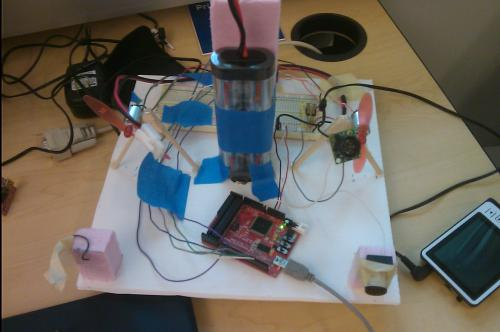

Platform Design
An in-progress photograph of the platform
The physical platform for project 1 was designed to be lightweight, stiff, and have enough space to fit the required components. It was assumed that the required construction material was corrugated plastic on top of a hard drive platter, so foam was not used for the main platform.
Intuitively, it is known that the polar moment of inertia can be minimized by keeping weight closest to the central axis of the platform. However, mounting the fans further from the axis provides a stronger moment and thus increases the rotational force. Therefore it is desired to keep the highest weight items in the center and the fans farthest from the center. The battery was mounted vertically on the hard drive platter, and the breadboard was placed directly next to the battery. The fans were mounted on small tripods made of balsa wood and hot glue. The remaining electronics were placed to be convenient for access due to their minimal weight.
It was found that the large breadboard was unnecessary and would offset the platform balance. The final prototype uses a small breadboard.
{kind=link}